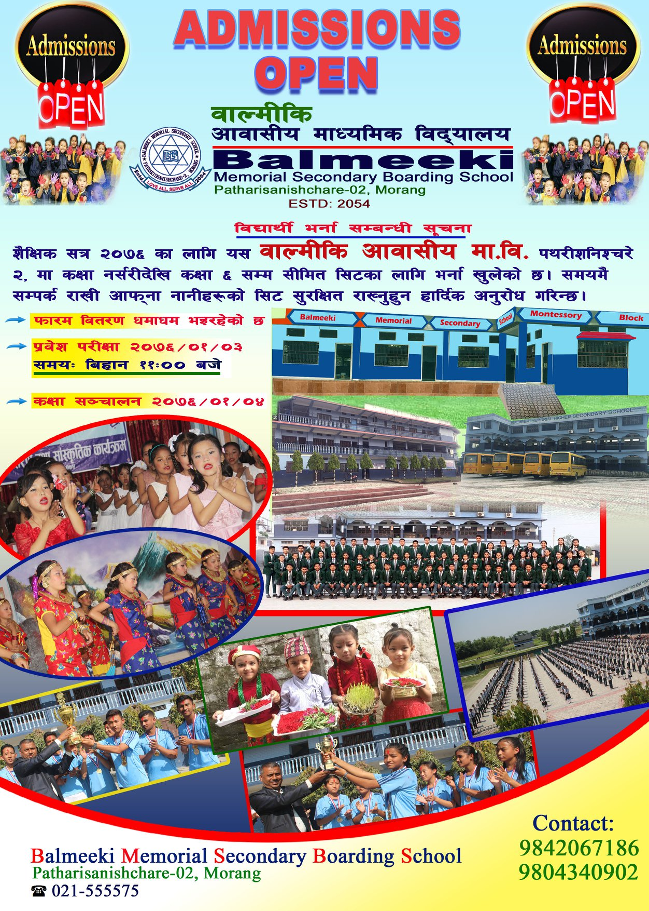
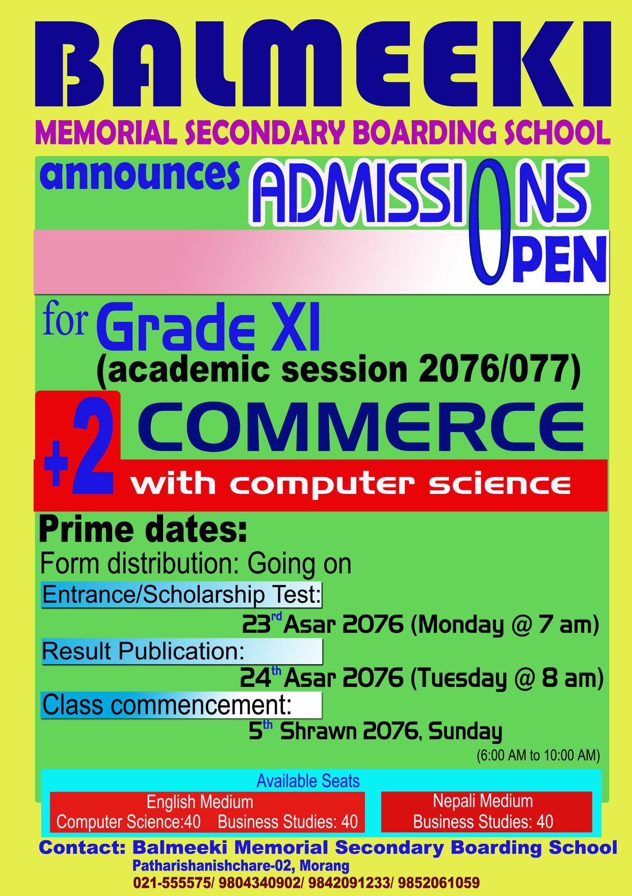

Scholarship
Fee Structure
Fee/Scholarships 2023


We are committed to providing equal opportunities for all
students to receive a quality education. To support this
commitment, we offer a diverse range of scholarships
designed to assist students at different academic levels,
from nursery to class 10, as well as at the +2 level.
Our scholarship program aims to recognize and reward academic excellence, talent, and potential. Through these scholarships, we aim to foster a culture of meritocracy and provide financial assistance to deserving students who may face financial constraints in pursuing their education.
For students in nursery to class 10, we offer scholarships based on academic performance, extracurricular achievements, and overall potential. These scholarships not only alleviate the financial burden on students and their families but also motivate and encourage them to strive for excellence in their studies and holistic development.
At the +2 level, we provide scholarships to students based on their performance in the entrance examinations and their potential to excel in higher education. These scholarships aim to support students in pursuing their chosen streams, such as Science, Commerce, or Humanities, and provide them with the opportunity to access quality education without financial barriers.
We believe that education should be accessible to all, regardless of financial circumstances. Our scholarship program is a testament to our commitment to inclusivity and ensuring that talented and deserving students have the chance to thrive and reach their full potential.
The selection process for scholarships is rigorous and transparent, with a committee evaluating applicants based on predefined criteria. We encourage all eligible students to apply for these scholarships and take advantage of the opportunities they provide.
At Balmeeki School, we strive to create a supportive and inclusive learning environment where every student has the opportunity to succeed. Through our scholarship program, we aim to make a positive impact on the lives of students and contribute to their educational journey.
Our scholarship program aims to recognize and reward academic excellence, talent, and potential. Through these scholarships, we aim to foster a culture of meritocracy and provide financial assistance to deserving students who may face financial constraints in pursuing their education.
For students in nursery to class 10, we offer scholarships based on academic performance, extracurricular achievements, and overall potential. These scholarships not only alleviate the financial burden on students and their families but also motivate and encourage them to strive for excellence in their studies and holistic development.
At the +2 level, we provide scholarships to students based on their performance in the entrance examinations and their potential to excel in higher education. These scholarships aim to support students in pursuing their chosen streams, such as Science, Commerce, or Humanities, and provide them with the opportunity to access quality education without financial barriers.
We believe that education should be accessible to all, regardless of financial circumstances. Our scholarship program is a testament to our commitment to inclusivity and ensuring that talented and deserving students have the chance to thrive and reach their full potential.
The selection process for scholarships is rigorous and transparent, with a committee evaluating applicants based on predefined criteria. We encourage all eligible students to apply for these scholarships and take advantage of the opportunities they provide.
At Balmeeki School, we strive to create a supportive and inclusive learning environment where every student has the opportunity to succeed. Through our scholarship program, we aim to make a positive impact on the lives of students and contribute to their educational journey.